밀리터리 잡담 (9/16)
게시: 2021-09-16T06:30:43+09:00
<전설의 시작> WW2 직후인 1945년 12월 5일, 7대의 TBM Avenger 뇌격기들(사진1, 그 편대 사진은 아님)이 플로리다 로더데일 기지(Fort Lauderdale)에서 통상적인 모의 폭격 훈련을 위해 플로리다 동쪽 바다로 출격. 통상 Flight 19이라고 불리는 이 편대의 총 15명의 승무원들을 이끈 것은 Charles Taylor 대위. 테일러 대위는 WW2 기간 중 태평양에서 복무했고 총 2,500의 비행시간을 기록한 베테랑. 나머지 조종사들은 비교적 신참이지만 그래도 최소 300시간의 비행시간을 쌓은 조종사들. (근데 어차피 의미없음. 편대장이 가자는 방향으로 가야지 초짜 중위 나부랭이들이 뭘 알겠나.) 훈련은 잘 진행되어 두 곳의 목표물에 성공적으로 투하. (사진2. 빨간 삼각형이 예정된 코스. 노란점이 폭탄 투하 장소, 왼쪽 아래 주황색 타원이 Floria Keys, 오른쪽 위 노란색 원이 Flight 19의 실종 추정 지역) 그런데 귀환하는 길에 기상이 악화되어 먹구름이 끼고 세찬 비가 내림. 설상가상으로 (진짜 그랬는지 모르지만) 테일러 대위의 나침반이 고장을 일으킴. 조종사들간의 무전 대화를 들어보면 적어도 테일러는 그렇게 믿음. 먹구름 속에서 겁을 먹은 조종사들의 대화는 대충 이랬음. "현재 위치를 모르겠다" "아까 마지막으로 선회한 이후 길을 잃은 것 같다" 테일러의 목소리도 점점 겁을 먹은 것이 분명해짐. 그는 구름 사이로 일련의 섬이 보인다고 했고 따라서 플로리다 반도 남서쪽에 있는 Florida Keys 상공이라고 생각했음. 원래 대서양에서 길을 잃은 미군기는 무조건 서쪽을 향해야 하는데 본인 위치가 Florida Keys 상공이라고 생각한 테일러는 북동쪽을 향함. (해상에서 항로를 찾는 것이 이렇게 어려움) 마지막으로 들려온 교신은 테일러의 목소리. "육지가 나오지 않으면 해상 불시착한다... 누구 비행기든 연료가 10갤런 이하로 떨어지면, 그때 편대 전체가 함께 불시착한다." 그 이후 아무도 이 어벤저 편대를 보지 못했음. 미해군은 비행정 2대를 급파하여 불시착했을 조종사들을 수색 및 구조하려 했으나 2대 중 1대도 함께 사라짐. 이 어벤저 편대, 즉 Flight 19 이후 버뮤다 삼각지라는 말이 생겨났고 이 편대는 1977년 스티븐 스필버그의 'Close Encounters of the Third Kind'라는 영화 시작 부분에서 아리조나-멕시코에 걸쳐진 사막에서 30년 뒤에 어제 착륙한 것처럼 새것 상태로, 조종사 없이 빈 기체들이 발견되는 것으로 나옴. (사진 3) 이후 버뮤다 마의 삼각지는 엄청난 음모 이론을 낳으며 수십년간 떠들썩했으나, 통계치를 보면 세계 어느 곳이든 항공기와 선박은 그 정도 비율로 실종된다고 함. ** 버뮤다 삼각지의 최대 수혜자는 Charles Berlitz. 벌리츠가 1974년 출간한 책 'The Bermuda Triangle'은 무려 4천만부가 팔림. 찰스 벌리츠는 우리나라에서도 유명한 어학원인 Berlitz Language Schools를 창설한 막시밀리안 벌리츠의 손자임.
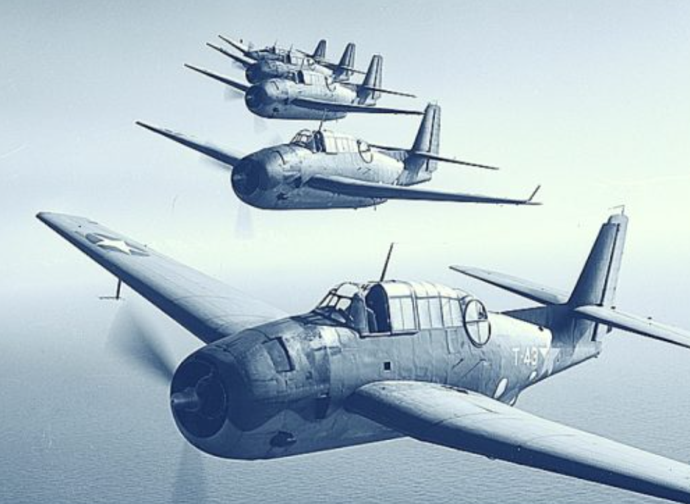 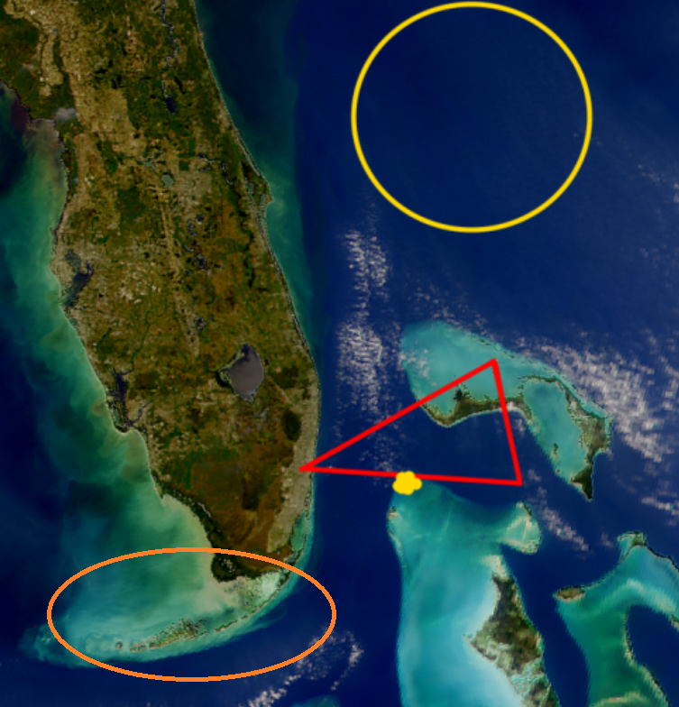 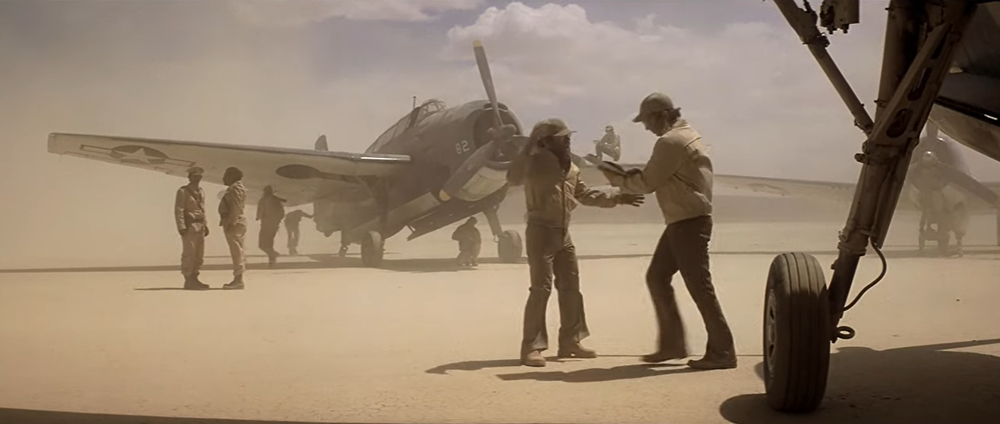
<여자도 군복무가 가능할까> 당연히 가능. 군대 일이라고 모조리 근육의 힘으로만 하는 것이 아니기 때문. 가령 WW2 Battle of Britain에서 레이더 상황실에서 근무하던 레이더 오퍼레이터나 작도사(plotter)들은 여자들이 더 많았음. (사진1, Women’s Auxilliary Air Force (WAAF)) 폭격기 조종 같은 것은 당연히 남자만 했을까? 아님. 전투 지역에 들어가는 것은 남자만 한 것이 맞지만 폭격기가 비행하는 것이 꼭 폭탄을 던지러 가는 것이 아닌 경우도 많음. 가령 공장에서 나와서 영국으로 실어나르는 것도 누군가 조종을 해야 함. 사진2는 1943년 당시 21살이던 Shirley Slade. WASP (Women Airforce Service Pilots) 소속의 1천명 정도의 여성 조종사 중 1명이었던 그녀는 WW2 기간 중 B-26과 B-29 등의 폭격기를 미본토에서 해외 기지로 수송하는 ferry 임무를 수행.
** 다만 '여자들도 징집하라'라는 일부 남자들의 불만에 찬 요구는 '여자들도 당해봐라' 라는 생각에서 나오는 것 같은데, 정말 여자들도 징집할 경우 저렇게 남자들이 군대에서 맡고 싶어하는 보직들만 맡게 될 듯... 평균적인 근육 힘은 분명히 남자가 압도적으로 세니까.
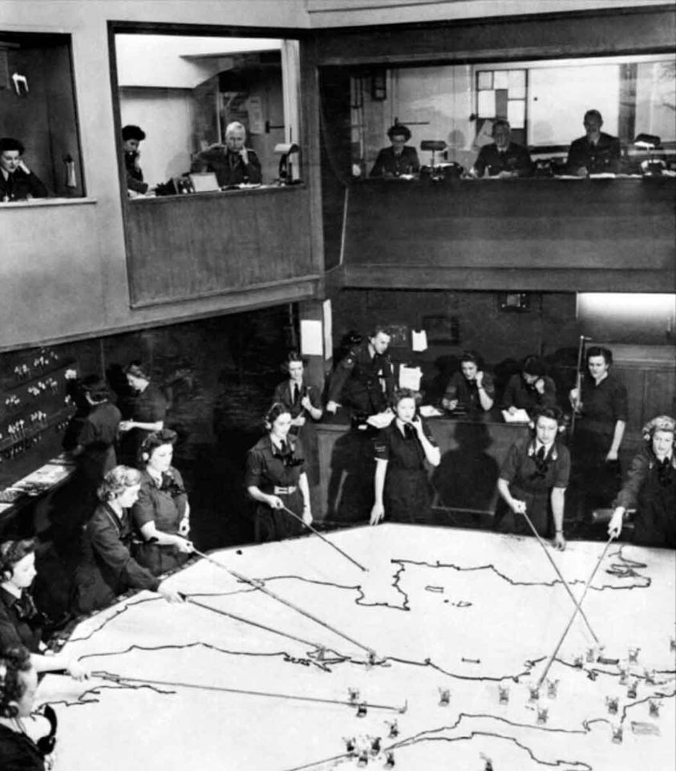 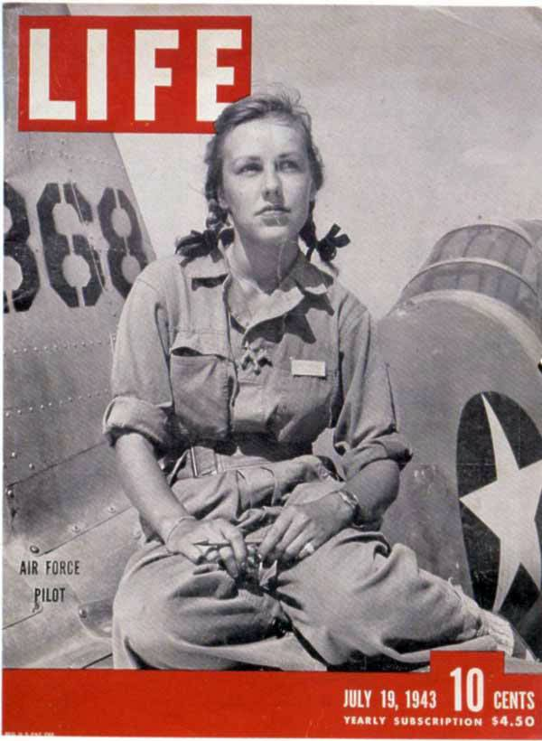
<B-17은 어떻게 영국에 갔을까> WW2 당시엔 아직 공중급유가 보편화되지 않은 상태. 그럼 대체 미국 공장에서 나온 B-17은 어떻게 영국까지 갔을까? 항공모함에 실어서 갔을까? 실제로 많은 단발 전투기들은 그렇게 영국으로 수송되었으나 B-17 같은 장거리 폭격기는 아니었음. 대부분 캐나다 - 그린란드 - 아이슬랜드를 거쳐 영국으로 날아감. 북아프리카로 가는 폭격기는 어떻게 갔을까? 플로리다에서 출발한 폭격기가 버뮤다 섬을 거친 뒤 아조레스 제도를 거쳐 영국이 점령한 프랑스령 모로코로 날아갔음. 버뮤다는 그렇다치고, 아조레스 제도는 당시 어느 나라 소유더라? 포르투갈임. 처음에 포르투갈은 U-boat 등 독일 해군만 아조레스 제도에서 재급유하는 것만을 허용했으나, 1943년 영국의 외교적 노력을 통해 독일 대신 영국에게 재급유를 허용. 미군은 영국 공군의 통제를 받는다는 조건으로 포르투갈의 허락을 받고 여기에 착륙해서 재급유 받았음.
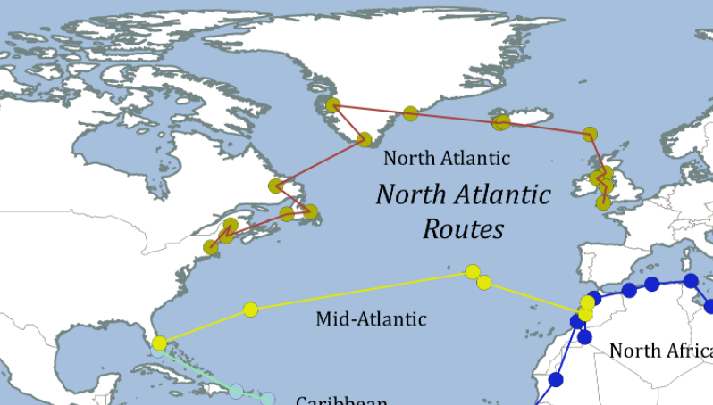
<B-29는 어떻게 쓰촨성 성뚜에 갔을까> B-29에 의한 최초의 일본 본토 폭격의 출발점은 괌이 아니라 유비와 제갈량이 툭탁거리던 쓰촨성 성뚜. 그런데 미국 공장에서 굴러나온 B-29는 대체 어떻게 쓰촨성까지 갔을까? 놀랍게도 대서양을 건너 아프리카를 지나 페르시아를 건너 뛰고 인도를 지나 날아갔음. 폭격기 뿐만 아니라 폭탄과 연료까지도 이런 식으로 공급하자니 미치고 환장할 노릇. 이 환장할 보급 상황은 미해군이 마리아나 제도에서 대승을 거두고 괌과 사이판에 비행장과 저유소를 지으면서 해결됨. 흔히 갖는 의문이 바다는 뻥 뚫렸는데 WW2에서 왜 미군은 곧장 일본 본토를 치지 않고 동남아 섬들을 하나씩 때려부쉈을까 하는 점인데, 이런 보급 문제 때문임.
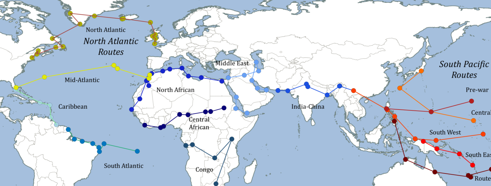
<두가지 부류> 정치인들 중에는 '쟤 바보 아냐?'와 '저게 누굴 바보로 아나?' 라는 반응을 자아내는 2가지 부류가 있는데, 아마 일본 해군은 둘 다에 해당했던 듯. 아래 사진은 일본 해군 즈이호가 '저는 항모가 아니구요, 별로 맛이 없는 전함이에요' 라고 미해군 항공대를 속이기 위해 갑판에 그려넣은 위장색. 포탑과 포신이 보임. 결과는? 아래 사진은 1944년 레이테 만 해전에서 불타는 즈이호. 거기서 꼬로록.
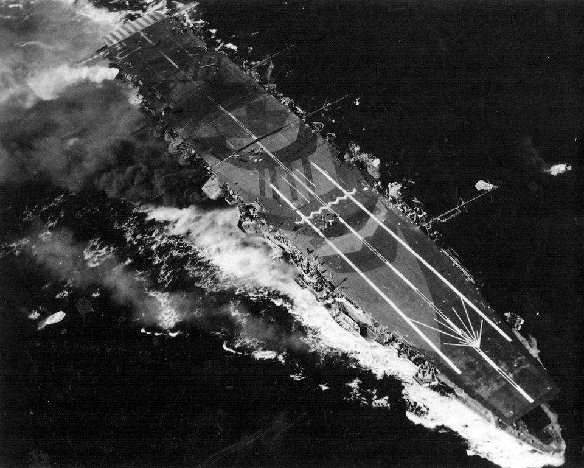
<체코제 장갑판> 항공모함계의 원조인 로열 네이비는 다음과 같은 고심 끝에 1939년 진수된 HMS Illustrious부터 항공모함에 장갑 비행갑판을 갖춤. 1) 미국이나 일본과는 달리, 영국 항모 특성상 독일/이탈리아 공군 활동 반경 내에서 작전해야 함 2) 육상 발진하는 적 공군기들은 로열 네이비의 함재기 (짧은 이착륙거리라는 제한 때문에 함재 전투기는 당시만 해도 대개 Swordfish나 Gladiator 같은 복엽기)보다 훨씬 우수함 3) 아직 레이더 개념이 없다보니 어느 방향에서 적기가 날아올지 모름 4) 전투기나 대공포로 항모 방어 훈련을 아무리 열심히 해봐도 적 폭격기 2~3대는 결국 방어망을 뚫고들어오는 것으로 결론 그래서 결국 CAP(Combat Air Patrol)을 포기. 대신 폭탄에 맞아도 견디도록 비행갑판에 3인치 두께의 장갑을 두름. 폭탄 몇 방은 맞고 버틴다는 작전. 적기 내습시에는 모든 함재기는 안전한 장갑 갑판 아래 격납고에 숨고, 대신 강력한 대공포로 적기를 최대한 막아낸 뒤, 퇴각하는 적기의 퇴각 방향으로 보복 공격을 나간다는 작전.
그런데 HMS Illustrious의 3인치 짜리 장갑 비행갑판은 체코에서 주문 제작. 그 주된 이유는 1922년 워싱턴 해군 조약으로 인해 전함의 장갑판 주문량이 뚝 떨어진 상태로 15년 있다보니 (사진2) 영국내 철강회사들의 장갑판 생산 용량이 떨어져서...
근데 정작 지중해에서 독일군 슈투카의 폭격을 받아보니 장갑판이 뚫림 (사진3). 이유는 영국 해군이 저거 설계할 때 영국 공군에게 물어보니 "향후 10년간 폭격기에서 운용 가능한 최대 크기의 폭탄은 250kg 정도"라고 해서 3인치 장갑판을 주문했는데, 실제로는 500kg 폭탄이 우박처럼 투하됨. ** 그래도 좁은 지중해에서 그토록 다구리를 당하고도 살아남은 이유는 장갑판 덕택이라는 중론.
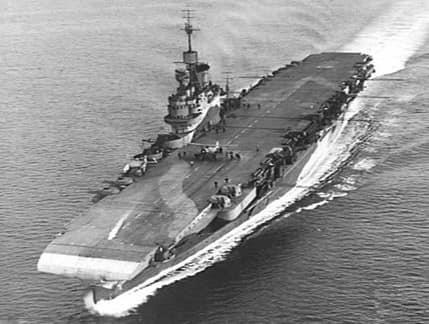 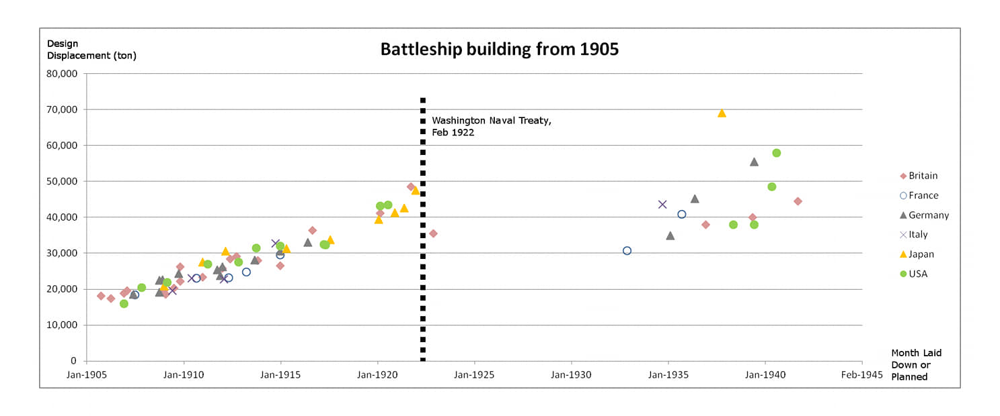 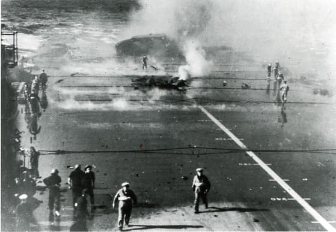
위에서 말한대로 HMS Illustrious의 3인치 장갑 비행갑판은 체코에서 주문한 것. 당연히 하도 무거운 자재라 영국 조선소에서도 기중기 용량 부족으로 고생이 많았다고. 근데 생각해보면 체코는 내륙 국가. 대체 이 거대한 장갑판을 어떻게 영국으로 수송한 것일까?? ** 기록을 보면 엘리베이터 설치할 공간을 위해 장갑판 가운데를 잘라내야 했다는 말이 있으므로 (갑판 전체가 1장의 통판은 아니더라도) 정말 큰 덩어리판으로 보낸 것 같은데... 저런 통판을 기차로 실어보냈을까?? ** 엘베 강으로 이어지는 블타바 강이 있긴 한데... 엘베 강에 다리가 한두개가 아닐텐데 (사진은 프라하를 관통하는 블타바 강)
<알뜰살뜰 로열 네이비>
포클랜드 전쟁을 마치고 돌아와 환영받는 HMS Invincible 고물의 양쪽 끝에 뭔가 대공포 같은 것이 달려 있음. 저건 출항할 때는 없던 것. 알고보면 아르헨티나군이 쓰던 스위스제 Hispano-Suiza HS.831 30mm 대공포를 노획한 것인데 그걸 또 뜯어다 항모에 달았음.
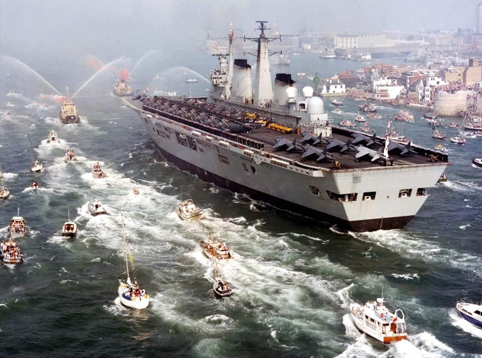 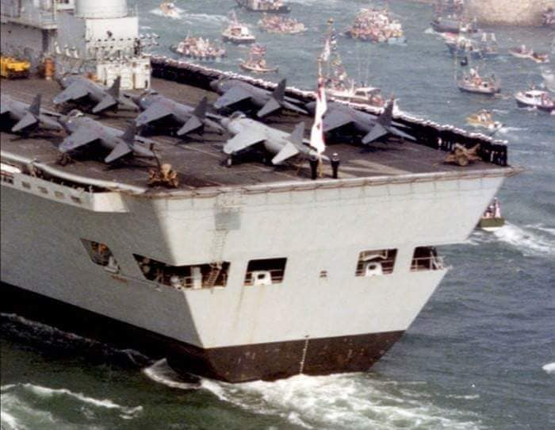 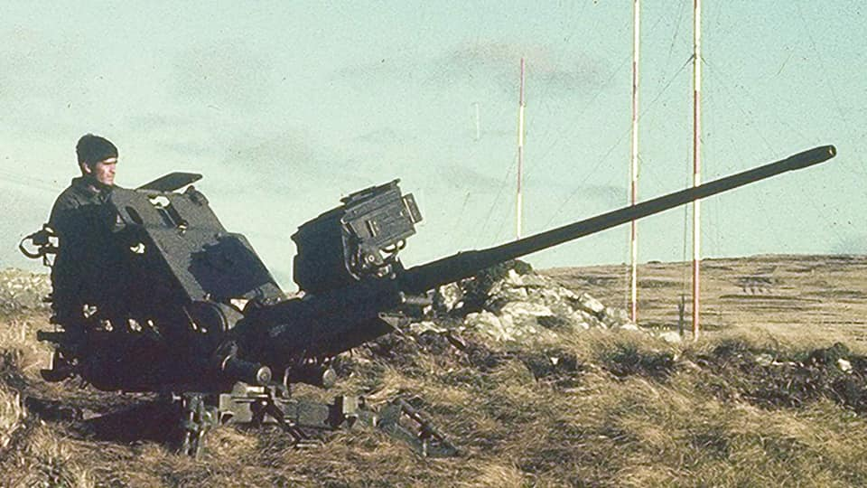
<이 항모 복층이네요> Illustrious급 항모 HMS Indomitable (2만9천톤, 30.5노트, 1940년 진수). 사실 얘는 일러스트리어스급이 아니라 개장 일러스트리어스급인데, 장갑 비행갑판을 가지고 있음에도 불구하고 그림에서 보듯이 2개층의 격납갑판을 가지고 있기 때문. 함재기 대수를 늘리려는 욕심에 나중에 덧붙여서 올렸다고. 그러나 그 덕분에 제트기 시대가 되자 격납고 높이가 너무 낮아 쓸모가 없어져서 1955년에 scrap 처리. 같은 일러스트리어스급이자 1년 먼저 친수된 HMS Victorious는 1969년까지 썼음.
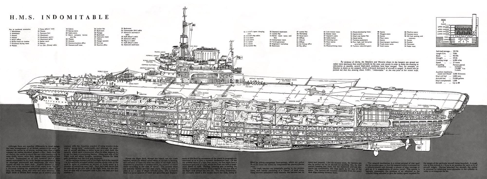
<먹는 곳과 자는 곳> HMS Indomitable의 전반부 섹션에서 빨간색 표시된 곳은 사병용 식당. 의외로 넓다. (대신 가로폭이 좁은가?) 그에 비해 후반부 섹션에서 빨간색 표시된 곳은 사병용 침실. 진짜 좁다. (대신 가로폭이 넓은가?) 원래 전통적인 군함에서는 고물 상갑판 쪽이 함장이나 제독 침실인데, 여기는 항모라서 비행갑판 위에 함재기들이 쿵쾅거리며 착함하니까 그곳은 사병들에게 양보 ㅋ. 제독 침실과 사무실 등이 그 아래에 노란색으로 표시된 곳. 매우 넓다. (대신 가로폭이 좁겠지?)
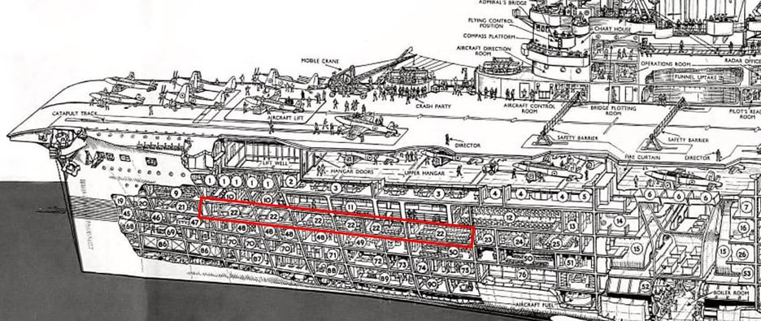 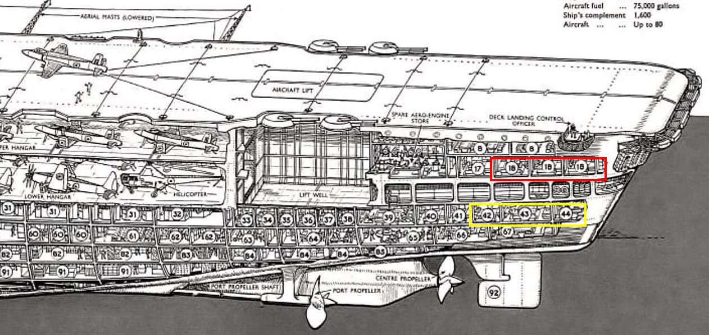